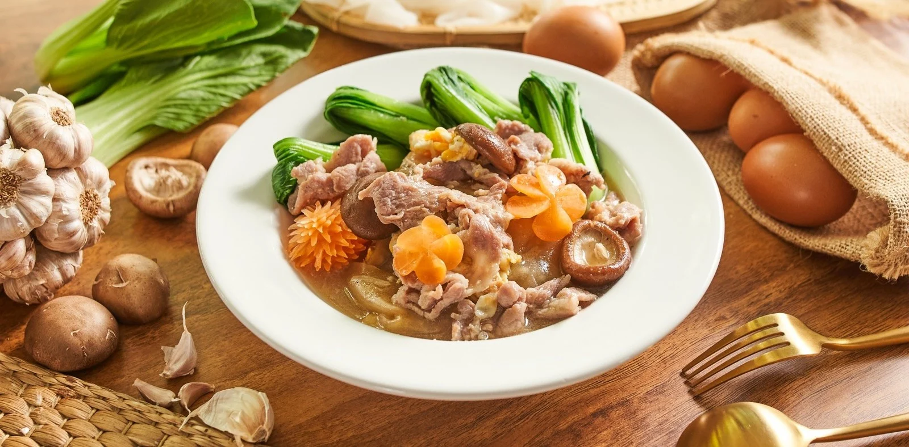

ราดหน้าหมูหมัก

วัตถุดิบ
- เนื้อหมูไลด์ 100 กรัม
- แป้งข้าวโพด 1 ช้อนชา
- เบคกิ้งโซดา 1/8 ช้อนชา
- น้ำมันหอย 1 ช้อนโต๊ะ
- ซอสปรุงรส 1 ช้อนชา
- น้ำตาลทราย 1 ช้อนชา
- พริกไทยขาวป่น 1 ช้อนชา
- ไข่ 1 ฟอง
- เส้นใหญ่ 100 กรัม
- กระเทียมสับ 20 กรัม
- ไข่ 2 ฟอง
- ซีอิ๊วดำ 1 ช้อนชา
- น้ำมันสำหรับผัด 1 ช้อนโต๊ะ
- กระเทียมสับ 20 กรัม
- น้ำมันสำหรับผัด 1 ช้อนโต๊ะ
- น้ำสต็อก 2 ถ้วย
- ซอสเต้าเจี้ยว 2 ช้อนโต๊ะ
- น้ำตาลทราย 2 ช้อนชา
- ซีอิ๊วขาว 1 ช้อนโต๊ะ
- พริกไทยขาวป่น 1 ช้อนชา
- แป้งข้าวโพด 1 ช้อนโต๊ะ
- น้ำผสมแป้งข้าวโพด 40 กรัม
- เบบี้บ็อคฉ่อย ตามชอบ
- เห็ดหอม ตามชอบ
- หมี่เหลืองทอดกรอบ ตามชอบ
Top
วิธีทำ
STEP 1 : หมักหมูนุ่มและผัดเส้น
-
นำหมูสไลด์หมักกับแป้งข้าวโพด เบคกิ้งโซดา น้ำมันหอย ซอสปรุงรส น้ำตาลทราย
พริกไทยขาวป่น และไข่ ทิ้งไว้ 30 นาที
-
ตั้งน้ำมันใส่กระเทียมโขลก ผัดจนหอม
ใส่ไข่แล้วใส่เส้นลงผัดเพื่อให้เส้นมีสัมผัสและกลิ่นของไข่ที่หอมจากน้ำมันกระเทียม
จากนั้นปรุงสีและกลิ่นด้วยซีอิ๊วดำ
STEP 2 : ทำราดหน้าหมูนุ่ม
-
ผัดกระเทียมกับน้ำมันให้หอม เติมน้ำสต็อกรอจนน้ำเดือด
ใส่หมูที่หมักแล้วลงไปต้มให้สุก แล้วปรุงรสด้วยซอสเต้าเจี้ยว น้ำตาลทราย
ซีอิ๊วขาว พริกไทยขาวป่น
-
นำน้ำผสมแป้งข้าวโพดไว้เมื่อน้ำราดเดือดให้ใส่ส่วนผสมแป้งข้าวโพดลงไปคนเพื่อให้เกิดความ
ข้นหนืด
STEP 3 : จัดเสิร์ฟ
- น้ำบ็อคฉ่อยไปลวกแล้วน็อคกับน้ำแข็งเพื่อหยุดความสุกของผัก
-
จัดวางเส้นและผักลวกแล้วราดด้วยน้ำราดหน้าหมูนุ่ม
สามารถทานคู่กับหมี่เหลืองทอดกรอบ ปาท่องโก๋กรอบ
Top
สารอาหาร
| สารอาหาร |
ปริมาณ |
หน่วย |
| โปรตีน |
300 |
g |
| คาโบไฮเดรส |
160 |
g |
| ไขมัน |
100 |
g |
| โซเดียม |
130 |
g |
| หมายเหตุ |
|
|
Top
Source:
wongnai
Comments